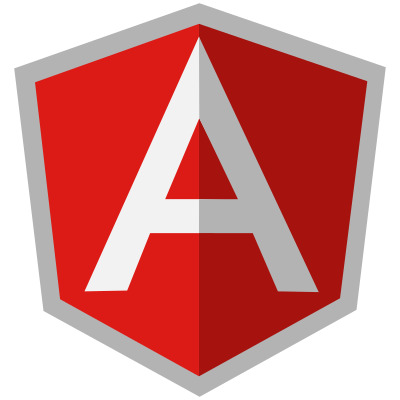
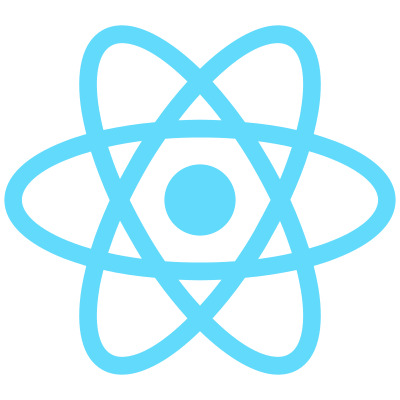
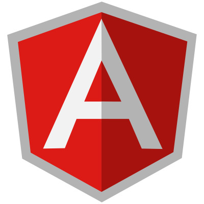
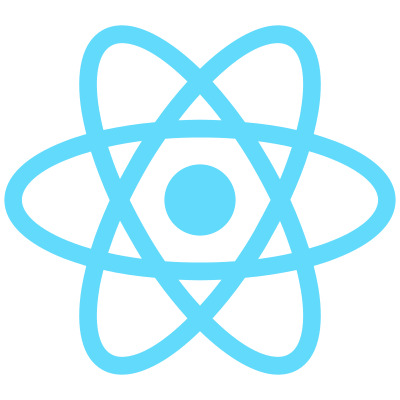

Cleverson Junior
Front-end Developer
Hello, World! Sou estudante de Sistemas de Informação na Universidade Federal de Uberlândia. Sempre achei incrível como um simples arquivo HTML em branco poderia se tornar um arquivo maravilhoso com um pouco de código e por esse motivo escolhi ser um Desenvolvedor Front-end. Atualmente tenho conhecimentos em HTML, CSS, JS, Angular e estou aprendendo React JS.
Tenho certificados dos cursos: Programador BR, Udemy, Programming Hub e Gama Academy. Na faculdade concluí as matérias de Algoritmos, Lógica de Programação e POO (Programação Orientada a Objetos), Estrutura de Dados e hoje estou aprendendo Programação Para Internet que é uma matéria 100% prática e Banco de Dados. Além das tecnologias mencionadas acima que utilizo na parte de Front-end, eu tenho conhecimento básico em Linguagem C e Java. Qualquer dúvida estou à disposição, será um prazer falar com você!
 


